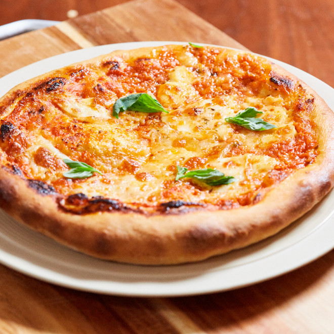

Pizza

Description
La pizza est une recette de cuisine traditionnelle de la cuisine italienne, originaire de Naples à base de galette de pâte à pain, garnie de divers mélanges d’ingrédients (sauce tomate, tomates séchées, légumes, fromage, charcuterie, olives, huile d'olive…)1 et cuite au four.
Ingrédients
Pour la pâte (3 pizzas avec ces proportions)
- 500g de farine (ou un mélange de 250g de farine normale +250g de farine à pain)
- 1 c.à café de sel
- 1 c.à soupe d'huile d'olive
- 1 sachet de levure de boulanger déshydratée (soit environ 6 à 8 g en général)
- 250 ml d'eau à température ambiante
Pour la garniture
- 2 Oignons
- 2 gousses d'ail
- 300ml de passata ou coulis de tomate
- 1 cuil. à café d'herbes de Provence(thym, origan, romarin...)
- 2 ou 3 tomates fraîches ou tomates cerises(facultatif)
- Mozzarella ou Fromage râpé type Emmental
- Chiffonade de jambon italien
- Olives noires
- Roquette
Étapes
- Dans un bol, faites un puis avec la farine, et mettez le sel d'un côté, la levure de l'autre (faites en sorte de ne pas mettre en contact le sel et la levure au démarrage)
- Ajoutez l'eau au centre, mélangez pour obtenir une pâte homogène, et pétrissez 10 minutes à la main sur le plan de travail ou à l'aide d'une machine à pain ou d'un robot avec le crochet pétrisseur
- Ajoutez l'huile d'olive et pétrissez encore 5 minutes
- Couvrez d'un film alimentaire au contact de la pâte, et laissez lever 1 heure à température ambiante, la pâte doit doubler de volume
- Chassez l'air de la pâte, en appuyant dessus avec la main, puis divisez la pâte en 2 ou 3 boules selon le nombre de pizzas souhaitées
- Laissez les boules de pâte reposer 30 minutes en les couvrant de film alimentaire
- Etalez chaque boule de pâte sur le plan de travail (si la pâte se rétracte, évitez de fariner votre plan de travail, elle va accrocher et s'étaler plus facilement).
- Disposez le cercle de pâte sur une plaque avec une feuille de papier cuisson et garnissez la avec la sauce a pizza avant d'enfourner
Bon appétit!!